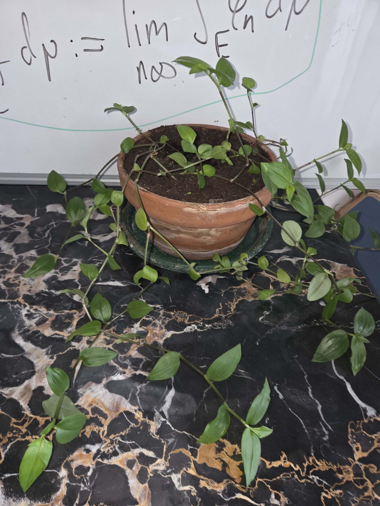
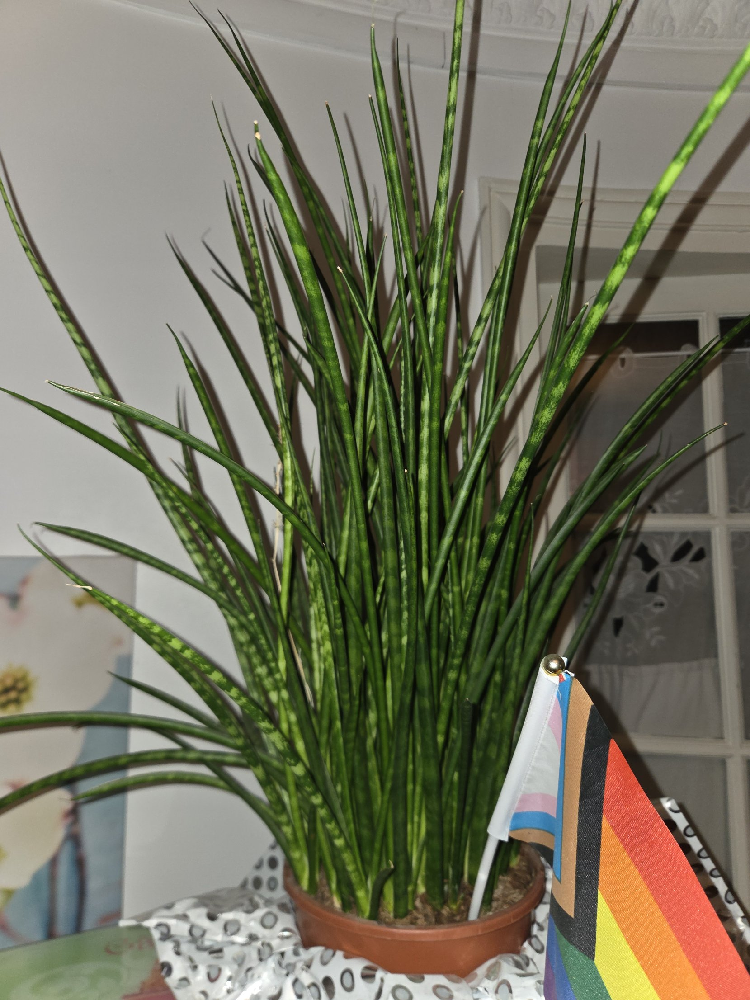
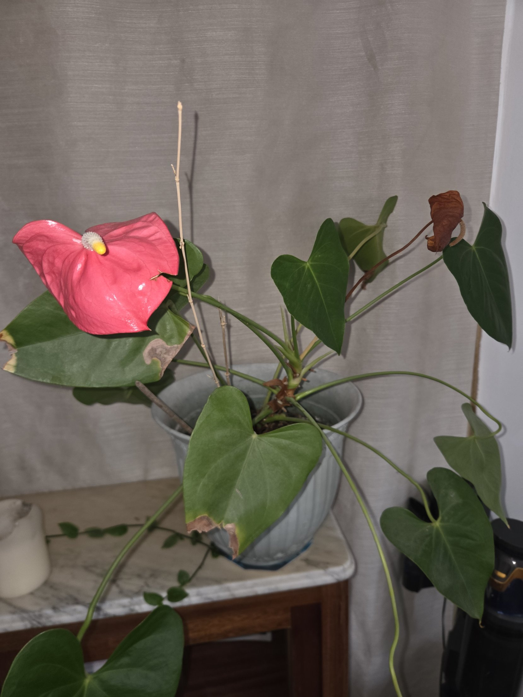

Aujourd'hui
Ce dont chaque plante de l'Avant-Poste a besoin, et ce qu'il y a à faire cette semaine.
Ce navigateur n'enregistre pas les coches : elles disparaîtront si tu recharges la page. Vérifie que tu n'es pas en navigation privée.
-

Tradescantia fluminensis
Misère. Facile.
- Lumière
- Vive mais indirecte ; pas de soleil direct de midi.
- Arrosage (automne-hiver)
- Quand les 2 premiers centimètres sont secs, un peu moins souvent qu'en été.
- Point clé
- L'air sec du chauffage lui donne des pointes de feuilles sèches.
-

Tradescantia pallida
Misère pourpre. Facile.
- Lumière
- Un peu de soleil direct : fenêtre sud, est ou ouest.
- Arrosage (automne-hiver)
- Quand le substrat a visiblement séché, puis abondamment ; moins souvent qu'en été.
- Point clé
- Plus elle a de lumière, plus elle est violette.
-

Beaucarnea recurvata
Pied d'éléphant. Facile.
- Lumière
- Le plus possible, soleil direct compris.
- Arrosage (automne-hiver)
- Substrat complètement sec, environ une fois par mois, voire moins.
- Point clé
- L'excès d'eau est la première cause de mortalité.
-

Dracaena stuckyi
Sansevière. Très facile.
- Lumière
- Très adaptable ; idéalement près d'une fenêtre lumineuse.
- Arrosage (automne-hiver)
- Substrat complètement sec ; pas plus d'une fois par mois, voire tous les deux mois.
- Point clé
- Elle ne craint vraiment que l'excès d'eau.
-

Anthurium scherzerianum
Anthurium. Difficulté élevée.
- Lumière
- Vive mais indirecte ; jamais de soleil direct.
- Arrosage (automne-hiver)
- Laisser un peu sécher entre deux arrosages ; eau non calcaire.
- Point clé
- La plus exigeante : air humide, loin des radiateurs, 18 °C minimum.
-

Yucca gloriosa
Yucca glorieux. Facile en extérieur.
- Lumière
- Plein soleil.
- Arrosage (automne-hiver)
- Peu : seulement quand les 5 premiers centimètres sont secs.
- Point clé
- Plutôt une plante d'extérieur ; espèce à confirmer (voir sa page).
Où placer chaque plante
Arroser toutes les plantes au même rythme et au même endroit est une erreur fréquente : le Beaucarnea et l'Anthurium, par exemple, ont des besoins presque opposés.
-
Soleil et sécheresse
Beaucarnea recurvata et Dracaena stuckyi
Près de la fenêtre la plus lumineuse (sud ou ouest). Arrosages rares, au même rythme pour les deux.
-
Soleil, arrosage modéré
Près d'une fenêtre ensoleillée (sud, est ou ouest). Arrosée un peu plus souvent que le groupe précédent, dès que le substrat a séché.
-
Lumière indirecte et humidité
Tradescantia fluminensis et Anthurium scherzerianum
Lumineux mais sans soleil direct brûlant, loin des radiateurs. Les regrouper aide à garder un peu d'humidité autour d'elles.
-
Dehors
De préférence sur un balcon ou une terrasse ensoleillés, toute l'année. Espèce à confirmer : voir sa page.